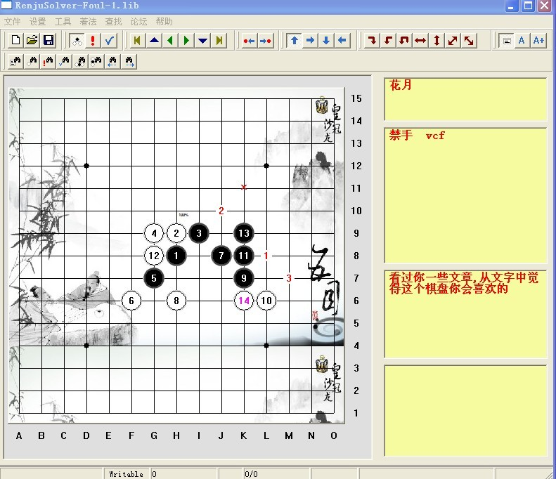

谁与连珠结缘
#1 谁与连珠结缘 作者：茗弈小刀 发表时间：2009-6-22 13:58:56
谁与连珠结缘
一少年，带着几多书生意气在学海泛舟时，你迤迤然向他走来，仅仅一个邂逅，已令他黯然心动，久久不能释怀。
你虽不是围棋，但同样深奥幽玄；你虽不是象棋，但在对局中同样阵法变幻，计谋层出不穷；你虽不是跳棋，但对弈中同样妙趣天成。你，就是你 — 五子棋，亦称连珠。
“五星如连珠，日月如合璧”，可是连珠二字，又是怎样的一番气势雄浑，苍劲幽远呢？
就是那个杏花如雨的江南，那个杨柳依依的季节，那个若冠少年。
胜日清闲，风语流莺，远望晓山青似黛，眼下秋水绿如蓝。不期然，暗香浮动间，你已深深吸引了他。
于是一盏残灯，一杯香茗，一副棋，还有你，长夜相伴。
芝砌春光，兰池夏气，菊含秋腹，桂映冬荣，日月虽时交替，少年依然如是。也渐渐了解了你。
你，纵横
15
格，中央天元，四角小星，棋分黑白；自是执黑先行，两人轮流落子，目标明确，简单易学，连成五子即为胜。
#2 Re:谁与连珠结缘 作者：茗弈南极的绿洲 发表时间：2009-6-22 14:43:55
这文章写的不错，受教了。
也郁闷，我想献花给楼主都不行。
#3 Re:谁与连珠结缘 作者：永不落泪 发表时间：2009-6-23 21:17:59
好文笔，拜读了。#4 Re:谁与连珠结缘 作者：越狱行辕 发表时间：2009-6-23 21:33:11
 中村小老头 不用追忆了。。。。
中村小老头 不用追忆了。。。。
#5 Re:谁与连珠结缘 作者：我怕恋爱 发表时间：2009-6-23 21:41:59
狠稀饭这篇文章！
#6 Re:谁与连珠结缘 作者：裁决殿雪月 发表时间：2010-7-31 2:02:43
写的真赞！！！#7 Re:谁与连珠结缘 作者：茗弈七夜 发表时间：2010-7-31 6:37:18
师傅的文采依旧如此出众，让我浮想联翩！真可谓是‘白云回望合，青霭入看无’！［ 茗弈小刀 于 2010-7-31 6:48:43 时奖励此帖[金币加 20 威望加1］
#8 Re:谁与连珠结缘 作者：茗弈小刀 发表时间：2010-7-31 6:49:37
谢谢徒弟，这文章是我弟弟醉舞斜的，不过夜儿能理解到我的心情。［此帖子已被 茗弈小刀 在 2010-8-2 15:56:26 编辑过］
#9 Re:谁与连珠结缘 作者：足球赛 发表时间：2010-8-2 10:38:09
小刀你为爱五子棋做出了许多贡献,做了一个棋盘,献给你,个人觉得你会喜欢的,因为看过你不少美文,觉得这个棋盘你会喜欢的
［此帖子已被 足球赛 在 2010-8-2 12:33:26 编辑过］
［此帖子已被 足球赛 在 2010-8-2 12:36:01 编辑过］
［此帖子已被 足球赛 在 2010-8-2 12:40:51 编辑过］
［ 茗弈小刀 于 2010-8-2 15:53:58 时花20金币送鲜花一朵］
［ 茗弈小刀 于 2010-8-2 15:54:35 时花20金币送鲜花一朵］
#10 Re:谁与连珠结缘 作者：茗弈小刀 发表时间：2010-8-2 15:57:26
谢谢楼上朋友，很喜欢。#11 Re:谁与连珠结缘 作者：足球赛 发表时间：2010-8-2 16:28:35
附上软件,直接解压到桌面即可
 献给小刀.rar
献给小刀.rar
［此帖子已被 足球赛 在 2010-8-2 17:14:38 编辑过］
［ 茗弈宽容 于 2011-11-25 20:26:00 时花20金币送鲜花一朵］
［ 茗弈宽容 于 2011-11-25 20:27:01 时花20金币送鲜花一朵］
［ 茗弈宽容 于 2011-11-25 20:30:25 时花20金币送鲜花一朵］
#12 Re:谁与连珠结缘 作者：棋元道 发表时间：2011-11-25 17:29:41
打不开
［ 茗弈宽容 于 2011-11-25 20:35:42 时花20金币送鲜花一朵］
#13 Re:谁与连珠结缘 作者：茗弈宽容 发表时间：2011-11-25 20:34:17
谢谢楼上挖坟的朋友。这么多年了，让我偶尔又看到足球塞送我的盘面，仍是不免感动并心存感恩。。。。